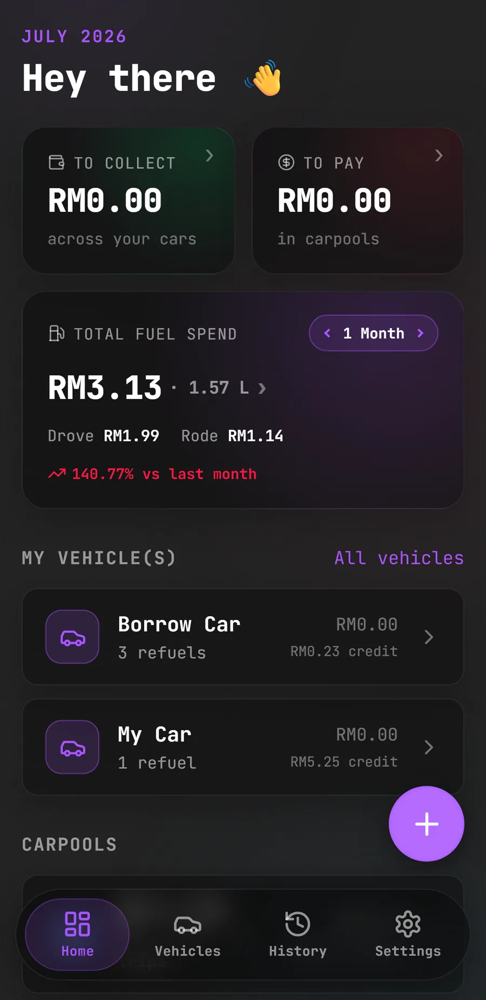
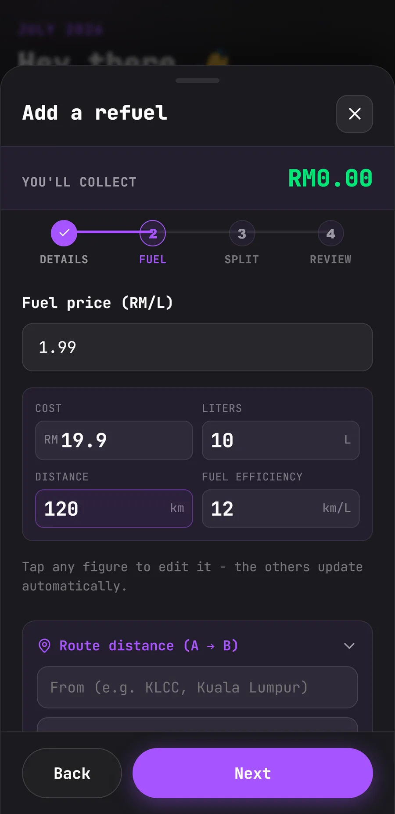
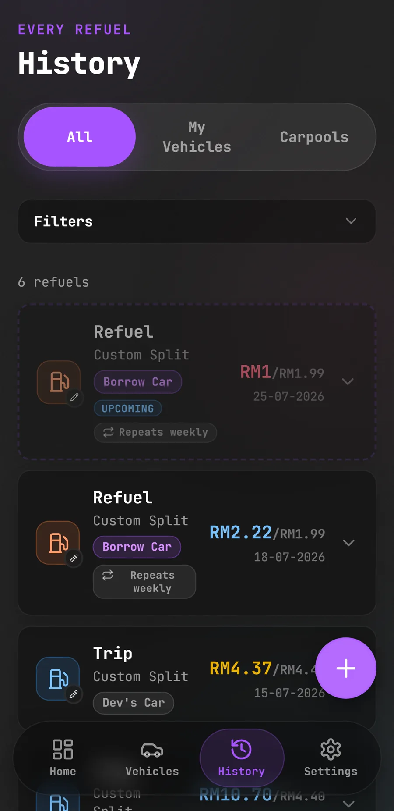

Tracking fuel fill-ups and fairly splitting carpool costs between
passengers, running fully on-device with no backend and no account
required.



Project Overview
CarPawl solves a simple problem: figuring out who owes what after a
shared car ride. Log fuel fill-ups by cost, litres, or distance,
then split each trip by distance, equally, or with custom rules. It
keeps a running balance so you always know who owes who. Everything
is stored locally with Dexie (IndexedDB), so it works offline and
keeps no personal data on a server. Available as an installable PWA
and a native Android app via Capacitor. Optional Google Drive sync
backs up your data and keeps devices in sync, with proper handling
for deletions and conflicts.